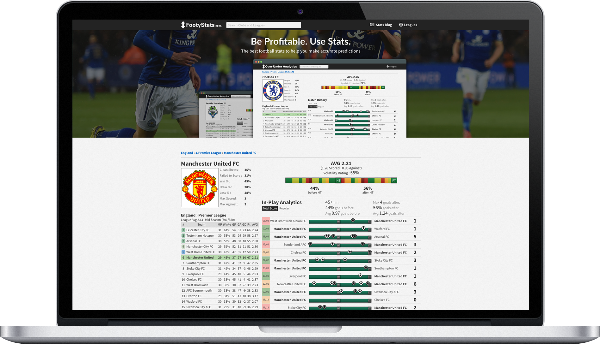
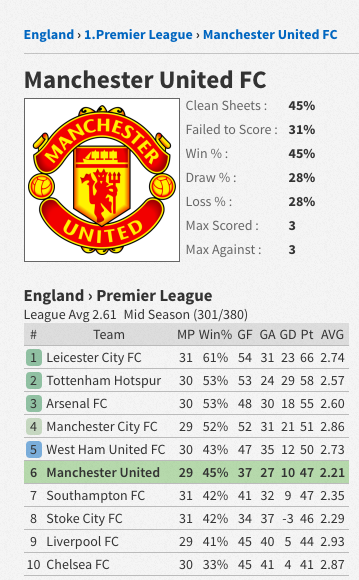
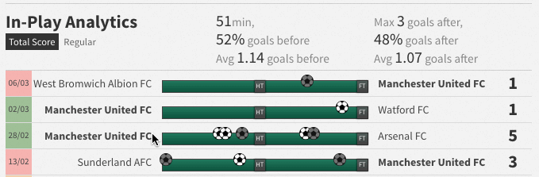

FootyStats - Football Analytics for Betting
URL : In Progress
Personal Startup
Timeline : 3 months + ongoing
Team : Jaime - Founder, Xerxes - Marketing Assistant
Personal Startup
Timeline : 3 months + ongoing
Team : Jaime - Founder, Xerxes - Marketing Assistant
FootyStats is a sports analytics tool that delivers comprehensive football statistics from competitions around the world - including Barclays Premier League, Liga BBVA, and Bundesliga. FootyStats was created as a reliable companion to football bettors.

The website focuses on providing statistics for club level teams. These stats are primarily used for betting - for example, Over X Goals, Under X Goals, Goals at Half Time, and Goals at Full Time. These are useful for casual and hardcore betters alike in order to inform their betting decisions.
FootyStats generates revenue through banner ads surfaced on the website. Ads will often be targeted towards betting companies and those within the soccer industry. The revenue made here will support the company and its development of new features.

Above, you see In-Play Analytics - which is the core feature of FootyStats. One of the most popular betting systems in recent times is something called "In-Play Bets". These are bets that can be placed as the match is being played. For example, you can bet on whether a team would score another 3 goals later within the same match. In-Play Analytics allows users to understand the historical data behind when a team scores or cocedes goals. This tool will help inform users in regards to their next In-Play bet.